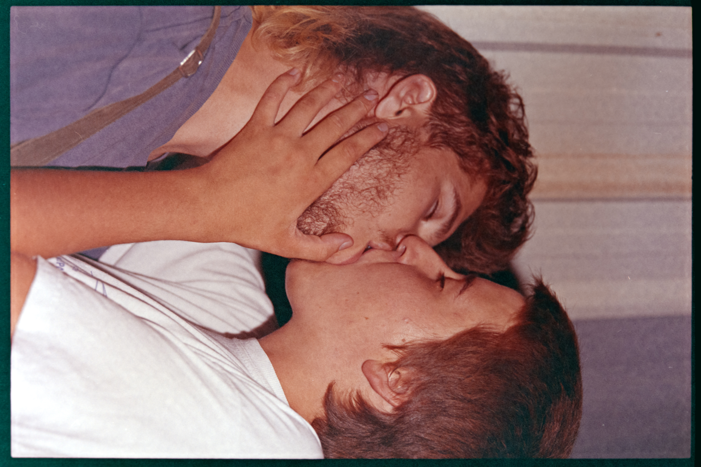
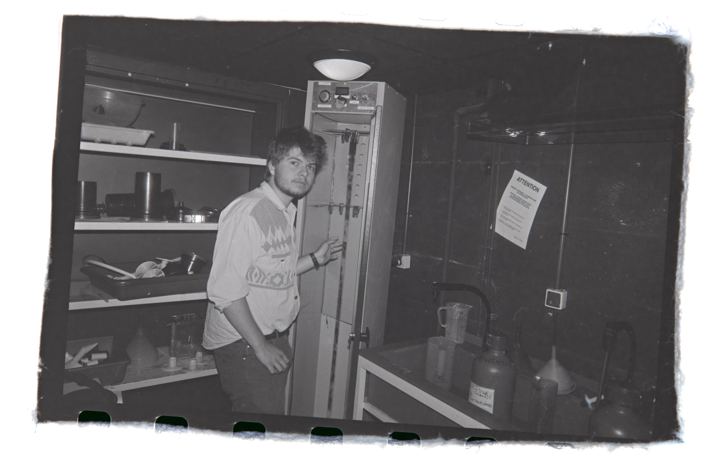
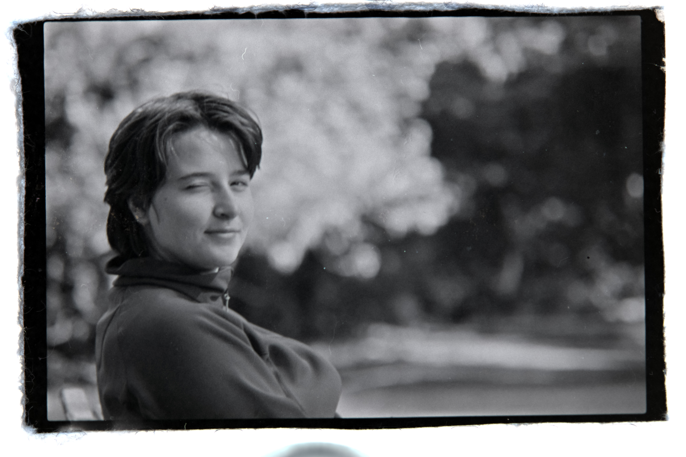
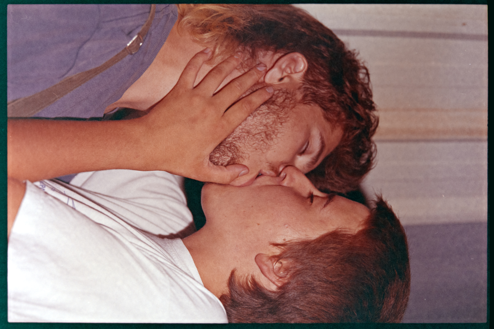
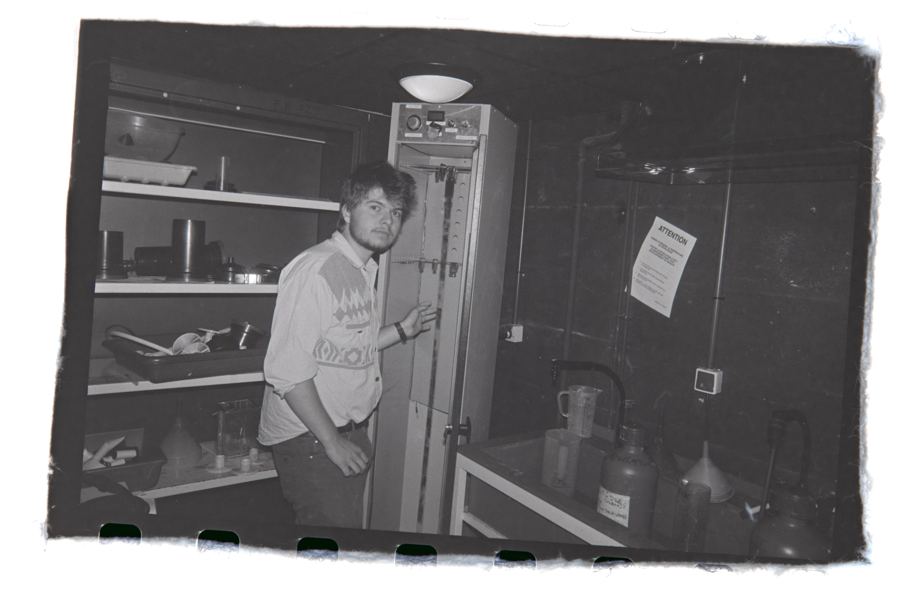
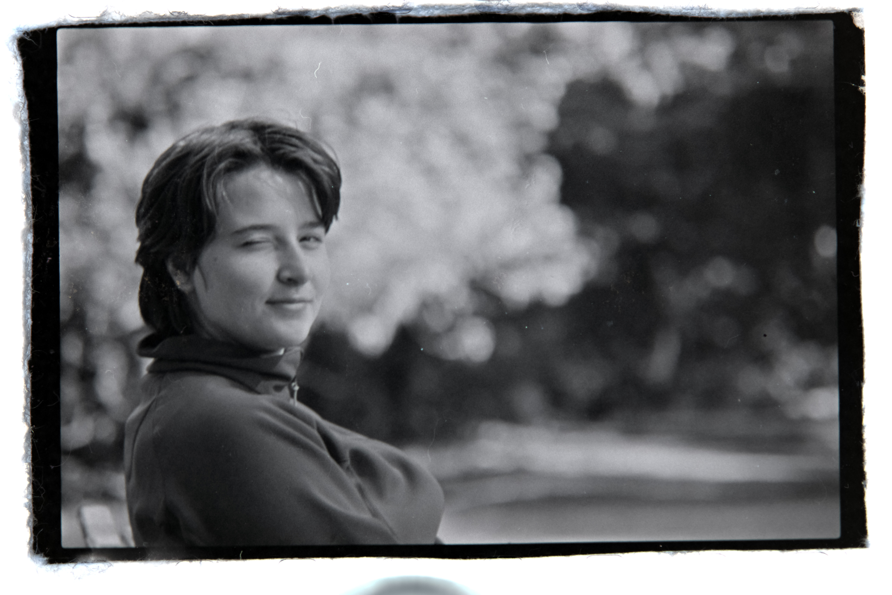

-
Je t'aime rose
 Je traverserai la terre entière pour te reconquerir s'il le faut
Je traverserai la terre entière pour te reconquerir s'il le faut
 Extrait de la première lettre : "Hate de découvrir à tes cotés de nouveaux films et nouvelles choses merveilleuses. Prends soin de toi. Je t'aime.tu es l'amour de ma vie rose-anna
Extrait de la première lettre : "Hate de découvrir à tes cotés de nouveaux films et nouvelles choses merveilleuses. Prends soin de toi. Je t'aime.tu es l'amour de ma vie rose-anna je repense à tous nos moments ensemble
je repense à tous nos moments ensemble
 je ne veux pas que cela s'arrete
je ne veux pas que cela s'arrete
 differents Extraits des cartes postales "Chats" : "Je le sais et j'en suis convaincu tu es la femme de ma vie, Tu pourras toujours compter sur moi à tes cotés. Savoir que ta petite frimousse, ton doux regard et ce petit sourire tout mignon seront toujours à mes cotés cela m'emplie de la plus profonde des joies[...]Je pensais pas qu'en rejoignant une blague sur un groupe messenger je rencontrerai la personne avec qui je veux passer le reste de ma vie, la personne sur qui je ne serais jamais lassé de poser les yeux, la personne qui m'emplie des plus agreables des sentiments, le bonheur et l'amour.[...] Tu remplie le coeur de la grosse chose maladroite que je suis.[...]Au programme de ce numéro du Journal de Rémi : Un reportage sur les compétitions de bébés nageurs."ta douceur ton regard
differents Extraits des cartes postales "Chats" : "Je le sais et j'en suis convaincu tu es la femme de ma vie, Tu pourras toujours compter sur moi à tes cotés. Savoir que ta petite frimousse, ton doux regard et ce petit sourire tout mignon seront toujours à mes cotés cela m'emplie de la plus profonde des joies[...]Je pensais pas qu'en rejoignant une blague sur un groupe messenger je rencontrerai la personne avec qui je veux passer le reste de ma vie, la personne sur qui je ne serais jamais lassé de poser les yeux, la personne qui m'emplie des plus agreables des sentiments, le bonheur et l'amour.[...] Tu remplie le coeur de la grosse chose maladroite que je suis.[...]Au programme de ce numéro du Journal de Rémi : Un reportage sur les compétitions de bébés nageurs."ta douceur ton regard ton rire
ton rire
 Je suis pret à tout pour toi
Extrait lettre 20/3/21 :" Je regrette déjà de ne pas t'avoir serré si fort contre moi pour pouvoir encore sentir ce soir l'empreinte de ton corps contre le mien.[...] A tes cotés je ressens un bonheur immense j'ai envie de pouvoir avoir des petits mah qui courent partout avec toi. Les voir se ballader depuis notre maison. Je t'aime ma gentille loutre de bonheur".
Je suis pret à tout pour toi
Extrait lettre 20/3/21 :" Je regrette déjà de ne pas t'avoir serré si fort contre moi pour pouvoir encore sentir ce soir l'empreinte de ton corps contre le mien.[...] A tes cotés je ressens un bonheur immense j'ai envie de pouvoir avoir des petits mah qui courent partout avec toi. Les voir se ballader depuis notre maison. Je t'aime ma gentille loutre de bonheur". Tu penses qu'on a trouvé notre Mirliton minette ? Tu pense qu'on en joue bien ? j'esspere que notre mirliton est commun, qu'importe quon en joue bienJ'espere rever de toi la nuit, j'aime tooujours rever de toi la nuit Minette
Tu penses qu'on a trouvé notre Mirliton minette ? Tu pense qu'on en joue bien ? j'esspere que notre mirliton est commun, qu'importe quon en joue bienJ'espere rever de toi la nuit, j'aime tooujours rever de toi la nuit Minette Jura avec toi
Jura avec toi


 Extrait lettre 23 fevrier 2021 :"Loin de toi ma vie et mon coeur sont plus vide, passer une journée sans te parler parait comme une journée sans sens. Je suis perdu sans avoir ton petit cou pour me blottir."
Extrait lettre 23 fevrier 2021 :"Loin de toi ma vie et mon coeur sont plus vide, passer une journée sans te parler parait comme une journée sans sens. Je suis perdu sans avoir ton petit cou pour me blottir."
 Extrait lettre 09-06-20 : "🥵"-Envie d'etre comme deux petits anges perchés.""
Extrait lettre 09-06-20 : "🥵"-Envie d'etre comme deux petits anges perchés."" Extrait lettre 20 fevrier 2021 : "Je veux revoir ta petite frimousse se reveiller d'une fraiche matinée au milieu du morvan. Je veux revoir ton doux regard plein d'amour durant des excursions familiales au Bec d'allier. Je veux ressentir à nouveau ta présence douce et apaisante quand je m'endors dans tes draps, je veux pouvoir vivre avec toi chaque instant encore plus intesement. Je veux vivre des voyages, des paysages, des odeurs, des gouts, des sensations avec toi. Je t'aime Rose-Anna Thierry. Tu es la personne qui emplie mon coeur des plus belles choses qui puissent exister." Extrait d'un morceau de papier déposé après un moment de doute : "Tu es la plus belle chose qui me soit arrivé et par belle j'entend comme "la" chose, quelquechose de perène, qui se rapproche à l'existence et qui est fondateur d'un moment transitoire de l'existence. Je veux vivre à tes cotés. Je veux fonder et créer à tes cotés. Je me répète mais je t'aime tellement rose, tu es ma minette et la personne que je veux serrer sur mon torse de loutre toute mon existence. Tu es drole, tu es douce, tu es magnifique, tu m'aides et me fais progresser, et j'espere t'apporter un peu de tout ce que tu m'apporte. Mima J'ai envie de pouvoir continuer à me blottir contre toi sous une couette chaude encore longtemps. J'ai envie de voyager, de faire des randonnées, de vivre de culture, de passion et de nature à tes cotés. Je veux pouvoir t'aimer et profiter de toi chaque instant MimaTu es énormément importante, ton petit sourire, tes petites joues qui rougissent sont les choses les plus belles et mignonnes qu'il m'ai été donné de voir."Extrait lettre 9-09-20 :"Je viens de me reveiller de la 1ère nuit depuis longtemps où tu n'es pas à mes côtés. Ca fait bizarre. Je comprend d'autant plus cette notion d'âme-soeurs maintenant qye j'en ressens le vide. Tu es la personne qui me complète au quotidien. Ton odeur et ton petit sourire me manquent."
Extrait lettre 20 fevrier 2021 : "Je veux revoir ta petite frimousse se reveiller d'une fraiche matinée au milieu du morvan. Je veux revoir ton doux regard plein d'amour durant des excursions familiales au Bec d'allier. Je veux ressentir à nouveau ta présence douce et apaisante quand je m'endors dans tes draps, je veux pouvoir vivre avec toi chaque instant encore plus intesement. Je veux vivre des voyages, des paysages, des odeurs, des gouts, des sensations avec toi. Je t'aime Rose-Anna Thierry. Tu es la personne qui emplie mon coeur des plus belles choses qui puissent exister." Extrait d'un morceau de papier déposé après un moment de doute : "Tu es la plus belle chose qui me soit arrivé et par belle j'entend comme "la" chose, quelquechose de perène, qui se rapproche à l'existence et qui est fondateur d'un moment transitoire de l'existence. Je veux vivre à tes cotés. Je veux fonder et créer à tes cotés. Je me répète mais je t'aime tellement rose, tu es ma minette et la personne que je veux serrer sur mon torse de loutre toute mon existence. Tu es drole, tu es douce, tu es magnifique, tu m'aides et me fais progresser, et j'espere t'apporter un peu de tout ce que tu m'apporte. Mima J'ai envie de pouvoir continuer à me blottir contre toi sous une couette chaude encore longtemps. J'ai envie de voyager, de faire des randonnées, de vivre de culture, de passion et de nature à tes cotés. Je veux pouvoir t'aimer et profiter de toi chaque instant MimaTu es énormément importante, ton petit sourire, tes petites joues qui rougissent sont les choses les plus belles et mignonnes qu'il m'ai été donné de voir."Extrait lettre 9-09-20 :"Je viens de me reveiller de la 1ère nuit depuis longtemps où tu n'es pas à mes côtés. Ca fait bizarre. Je comprend d'autant plus cette notion d'âme-soeurs maintenant qye j'en ressens le vide. Tu es la personne qui me complète au quotidien. Ton odeur et ton petit sourire me manquent."
 Extrait de la lettre du 3/2/21 : "Tu me manques, l'odeur de ta peau me manques. J'ai hate de nous, tout amoureux l'un contre l'autre."
Extrait de la lettre du 3/2/21 : "Tu me manques, l'odeur de ta peau me manques. J'ai hate de nous, tout amoureux l'un contre l'autre."
 Extrait de la lettre du 9/3/21 : *Dessin tout mignon d'une martre toute mignonne dans la neige*
Extrait de la lettre du 9/3/21 : *Dessin tout mignon d'une martre toute mignonne dans la neige* mon amour...
Extrait lettre 23 fevrier 2021 :"Loin de toi ma vie et mon coeur sont plus vide, passer une journée sans te parler parait comme une journée sans sens. Je suis perdu sans avoir ton petit cou pour me blottir."Je t'aime mon amour... Je t'aime tellement, je veux continuer ma vie contre toi, je veux que tu fasse partie de cette douce chose qu'on entreprends je veux me réinvestir comme je l'ai jamais été dans notre amour, tu le mérite, tu est merveilleuse, tu es la femme de ma vie, la personne que j'avais abandonné de chercher pour quelle me tombe dessus un jour avec son petit sourire et son amour. je veux te retrouver rose, je t'aime.
mon amour...
Extrait lettre 23 fevrier 2021 :"Loin de toi ma vie et mon coeur sont plus vide, passer une journée sans te parler parait comme une journée sans sens. Je suis perdu sans avoir ton petit cou pour me blottir."Je t'aime mon amour... Je t'aime tellement, je veux continuer ma vie contre toi, je veux que tu fasse partie de cette douce chose qu'on entreprends je veux me réinvestir comme je l'ai jamais été dans notre amour, tu le mérite, tu est merveilleuse, tu es la femme de ma vie, la personne que j'avais abandonné de chercher pour quelle me tombe dessus un jour avec son petit sourire et son amour. je veux te retrouver rose, je t'aime.